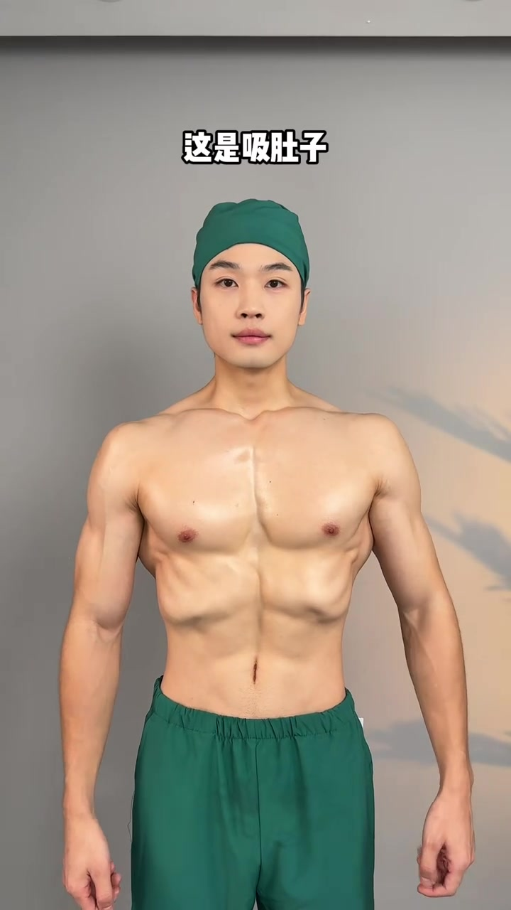
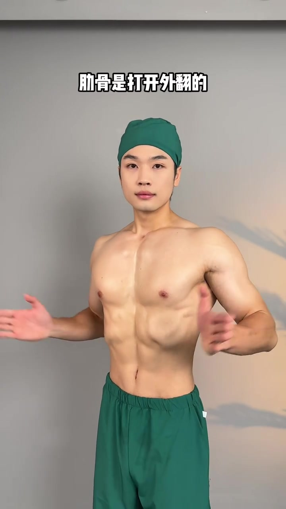
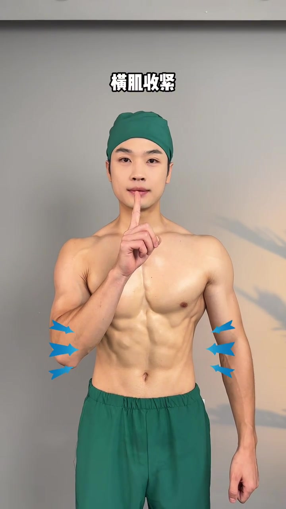
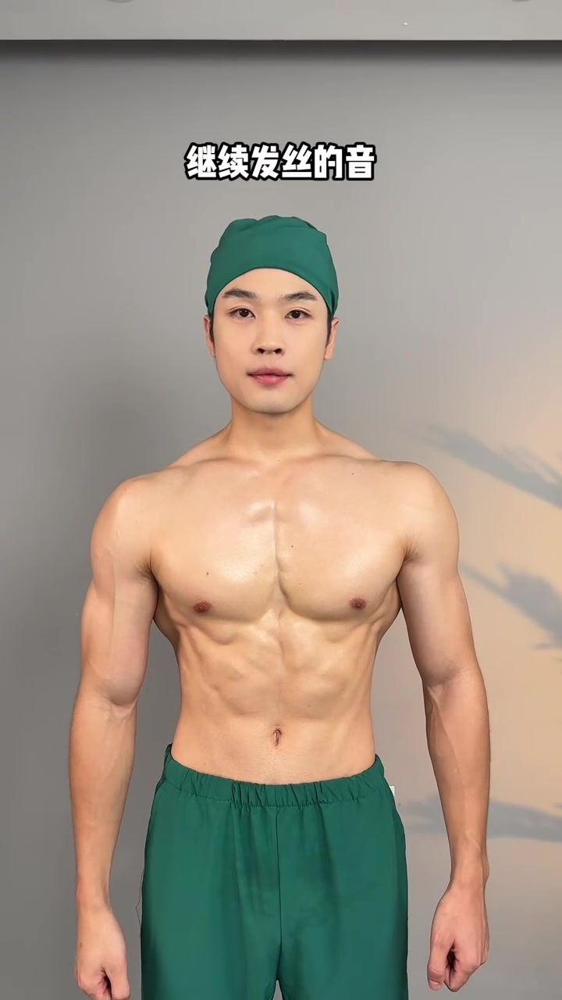
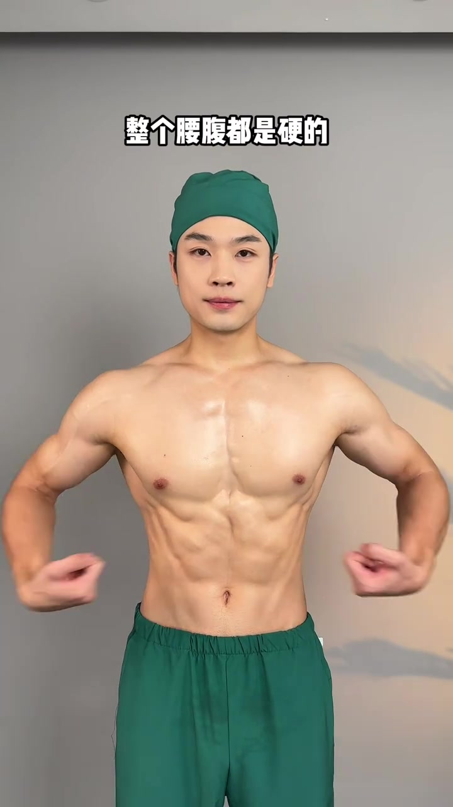
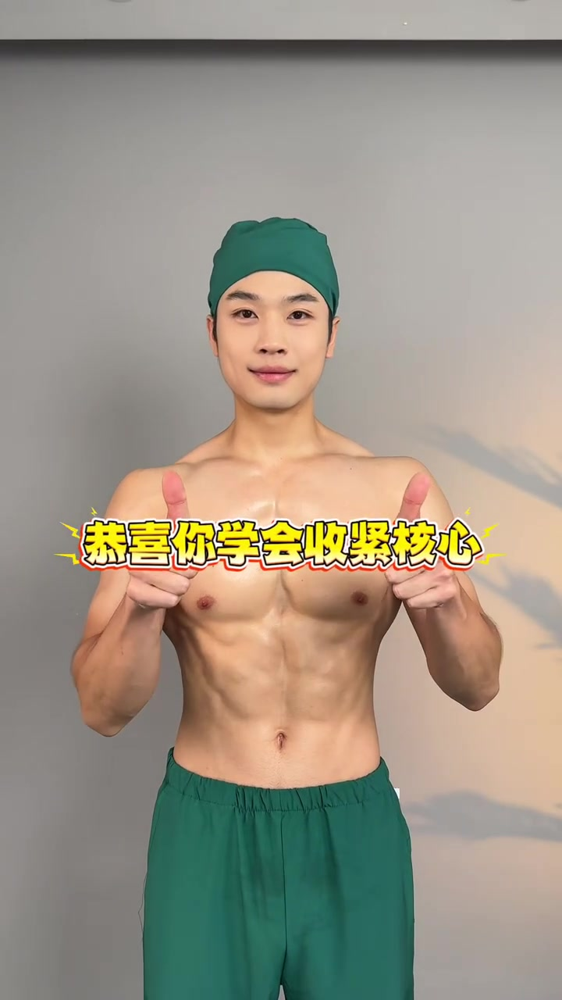

开场：很多人以为「吸肚子」就是收紧核心
博主戴深绿色手术帽、穿同色长裤，赤裸上身站在灰墙前。画面顶部大字写「这是吸肚子」——他用力把腹部向内吸，胸廓却向外鼓，肋骨从侧面看是打开、外翻的。

口播直接点破：这是吸肚子，核心是散的，从侧面看肋骨是打开外翻的。也就是说，视觉上肚子变平了，但深层稳定肌群并没有真正协同工作。
口播原文：「这是吸肚子，核心是散的，从侧面看肋骨是打开外翻的。」

第一步 · 00:07–00:11
想象面前有支蜡烛，用力吹灭它
画面切到正面，博主食指竖在唇前做「嘘」的手势，胸前叠了一支卡通蜡烛贴纸。字幕写「假装前面有个蜡烛」——这是把抽象的核心内收，换成一个谁都能模仿的呼吸动作。
接着他做出吹气动作，口播要求：对着蜡烛使劲吹，肋骨向前向内收。重点不是把肚子吸空，而是让肋廓整体往内、往下合拢，像要把腰腹「封箱」。
口播原文：「假装前面有个蜡烛，对着蜡烛使劲吹，肋骨向前向内收。」
第二步 · 00:12–00:15
腹横肌收紧：连续咳嗽两声
蜡烛意象之后，视频进入更具体的肌群提示。博主双手按在腹侧，字幕强调「腹横肌收紧」，并示范连续咳嗽两声——这是用短促、爆发式的腹压变化，唤醒深层横向腹肌。

口播原文：「腹横肌收紧，连续咳嗽两声。」
第三步 · 00:16–00:19
继续发「嘶」的音，把张力维持住
咳嗽找到腹横肌之后，不能立刻松掉。博主嘴唇微张，做出持续「嘶——」的呼气，字幕同步提示。这个动作把刚才咳嗽建立的腹压，延长成可维持的核心张力。

口播原文：「继续发撕的音。」
再切到正面，他用手掌轻拍腰腹，字幕写「整个腰腹都是硬的」。口播确认：此时整个腰腹都应该摸起来发紧、发硬，而不是只有表面皮肤被吸进去。

口播原文：「整个腰腹都是硬的。」
收尾 · 00:21–00:23
恭喜你，学会收紧核心
最后回到正面站立，胸前弹出彩色描边大字「恭喜你学会收紧核心」。博主表情放松，像完成了一次跟练打卡。整支视频没有复杂器械，只靠意象、呼吸与三次短动作，把「核心收紧」从口号变成可自检的体感。
口播原文：「恭喜你学会收紧核心。」

跟练小抄
① 别只吸肚子，肋骨外翻说明核心仍散；② 想象蜡烛，用力吹气让肋骨内收；③ 咳嗽两声唤醒腹横肌；④ 发「嘶」音维持张力；⑤ 自检腰腹是否整体变硬。